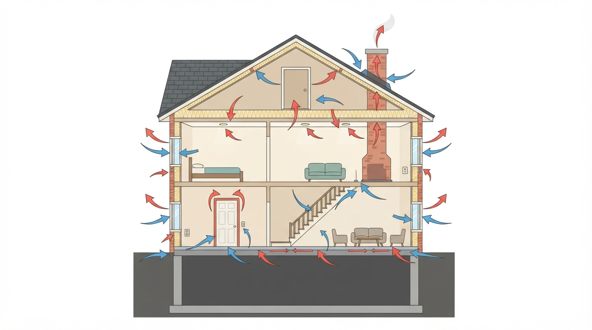
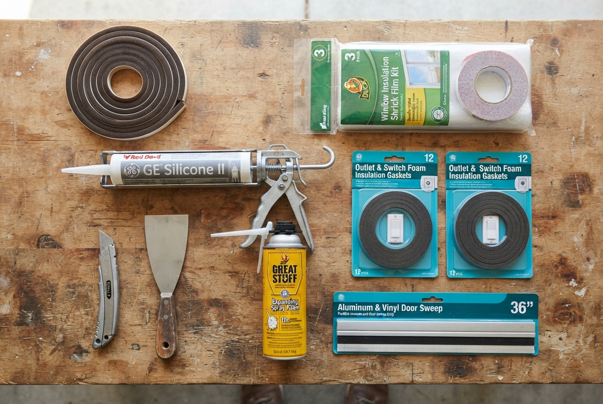

Air Sealing & Weatherization Guide
A comprehensive walkthrough of every major air leak point in a typical home — from windows and doors to outlets, attic hatches, and basement sills. Based on a full home remodel in a 1946 New England wood-frame house.

Overview
The video walks through a house room-by-room, identifying every type of air leak. The approach is prioritized from cheapest/easiest fixes to major investments. The order below follows the video's structure.
Where Air Leaks Happen — Whole House Map
1. Holes, Gaps & Penetrations
Start with the obvious: any hole in an exterior wall is a draft source.
| Location | Fix | Material |
|---|---|---|
| Wall holes (doorknob, damage) | Patch + insulate behind | Joint compound, fiberglass scrap |
| Under sink / vanity on exterior wall | Seal around pipe/wire penetrations | Great Stuff spray foam (sparingly) |
| Dryer vent gap | Fill oversized hole around vent pipe | Spray foam or fiberglass |
| Old/dead exterior vents | Remove, insulate, side over | Fiberglass batt + siding |
| Exterior penetrations (hose bibs, wires) | Walk around house, seal from outside | Silicone caulk |
| Behind trim (windows/doors) | When upgrading trim, insulate gap | Spray foam (low-expansion) or fiberglass |
2. Windows

Remove window AC units and fans
This is step one. Even a "closed" window AC leaks a massive amount of air. Take them out for winter. If you have a through-wall AC unit, build an insulation cover or buy one.
Close storm windows
If you have exterior storm windows, make sure they're fully closed. Easy to forget after removing an AC.
Check/replace weather stripping
On the bottom sash of double-hung windows, check the weather stripping. If worn out, replace with adhesive-backed foam tape (available in various thicknesses). Even a tiny gap lets in a surprising amount of cold air.
Check for broken window seals
If you see condensation between the glass panes, the Argon gas seal has failed and the window has lost most of its insulating value. Order a replacement sash — much cheaper than a full window replacement.
Apply window shrink film (for drafty/old windows)
For single-pane or storm-only windows, apply a window insulation shrink kit:
- Apply double-sided tape around the window trim
- Cut film to size, press onto tape
- Shrink with a hair dryer until taut and crystal clear
- Wipe all condensation dry before sealing — trapped moisture causes mold
Window Types & Efficiency
| Window Type | Efficiency | Notes |
|---|---|---|
| Single-pane glass | 🔴 Poor | Use shrink kit; consider replacement |
| Single-pane + storm window | 🟡 Fair | Close storms; shrink kit helps further |
| Double-pane, Argon, Low-E | 🟢 Good | Modern vinyl replacement; check seals |
| Old wooden double-hung | 🟡 Variable | Weather strip; consider replacement sash |
3. Exterior Doors
Install or maintain a storm door
If you have one with interchangeable screen/storm panels, swap to the storm (glass) panels for winter.
Check for daylight
Close the door and look for visible light around all edges. If you can see daylight, you're losing heat.
Seal gaps with caulk
Run a bead of silicone caulk along any gaps in the storm door frame where daylight shows.
Replace worn weather stripping
On the main door, check the weather stripping in the frame channel. Modern types pull out and slide back in. For older doors, peel old foam and apply new adhesive-backed door weather stripping.
Adjust or replace door sweep
Check the bottom of the door — if you see daylight, the sweep needs adjustment or replacement. Adjustable sweeps have screws: loosen, push down until daylight disappears, re-tighten.
Adjust threshold
On newer doors, the threshold has screws. Turn to raise/lower until it creates a tight seal against the sweep.
Install door corner seals
The bottom corners of the door frame are a common leak point. Apply adhesive-backed corner seal pads behind the weather stripping, then run a bead of silicone along the bottom.
Check latch tension
If the door doesn't close tightly against the weather stripping, adjust the latch/strike plate to pull the door in further. The seal needs to be slightly compressed when closed.
4. Outlets & Switches on Exterior Walls
Electrical boxes on exterior walls are a surprising source of drafts. The gap between the box and drywall is never airtight on standard installations.
Remove the cover plate
Turn off power at the breaker first. Unscrew the cover plate.
Caulk around the box perimeter
Run a thin bead of caulk between the electrical box and the drywall — all the way around. Do NOT put anything inside the box itself; that space is for wiring only.
Install foam socket sealers
These are pre-cut thin foam gaskets that go behind the cover plate. Available for outlets ($3–5/pack) and both toggle and Decora switches. Just place over the device, screw the plate back on.
Let caulk dry before reassembling
If you caulk first, let it skin over before putting the plate back so it doesn't stick.
5. Ceiling & Attic (Biggest Impact)
Warm air rises. Every penetration in your ceiling is a direct path for heated air to escape into the attic and out through the roof.
Attic Insulation
Check existing insulation depth
Pull up attic floorboards (if present) and check. If old/thin/contaminated (mice), remove and replace.
Add more if needed
You can layer unfaced fiberglass or mineral wool batts perpendicular to existing. If there's already a vapor barrier (facing), do NOT add another one — it'll trap moisture.
Consider an energy audit program
Many states have programs (e.g., Mass Save in Massachusetts) that provide free or low-cost energy audits and may subsidize insulation. Check your local programs.
Attic Ladder / Hatch Box
A pull-down attic staircase is essentially a large, uninsulated hole in your ceiling. Build or buy an insulated cover box that fits over the opening from the attic side.
Recessed Light Upgrades
| Type | Air Leakage | Upgrade Path |
|---|---|---|
| Old recessed can (incandescent) | 🔴 High — large dome penetrates ceiling | Difficult to seal; consider full LED conversion kit |
| Older canless LED (thick housing) | 🟡 Moderate — large housing blocks insulation | Upgrade to ultra-thin |
| Halo ultra-thin LED | 🟢 Low — nearly flush, insulation fits around/over | Best option — allows full insulation coverage |
6. Chimney & Fireplace
- Close the flue when the fireplace isn't in use. This is the #1 chimney heat loss.
- Close any fireplace glass/doors
- Consider a chimney balloon — an inflatable pillow that seals the chimney completely when not in use
7. Basement & Crawl Space
Sill Plate (Where House Meets Foundation)
This is the most critical basement seal. In new construction, sill seal strips go between the foundation and the wood sill. In older homes, gaps exist.
Inspect the sill plate
Look for gaps between the sill and foundation, and between double sills.
Caulk all gaps
Run silicone caulk along every visible gap in the sill area.
Paint the sill
Painting the sill seals micro-gaps and adds a moisture barrier.
Insulate each bay
Fill each cavity between floor joists along the rim board with fiberglass or mineral wool. Modern code requires this in new construction.
Bulkhead / Basement Entry
Seal all framing gaps in basement stair enclosures. Fill with insulation and cover with plywood or drywall.
Crawl Spaces
If rooms above a crawl space are 5°+ colder than the rest of the house, the floor is uninsulated. Options:
- Insulate crawl space ceiling (floor joists) with fiberglass or mineral wool batts
- Insulate any exposed pipes at the same time (freeze protection)
- Quick fix: lay down area rugs on cold floors above
8. Draft Detection Methods
Materials & Tools Checklist
| Item | Spec | Best For | ~Cost |
|---|---|---|---|
| Sealants | |||
| Silicone caulk | Clear or white, exterior grade | Gaps around frames, boxes, sills | $5/tube |
| Low-expansion spray foam | Window & door rated | Pipe/wire penetrations, large gaps | $8/can |
| Joint compound | Standard | Patching wall holes | $8/qt |
| Weather Stripping | |||
| Adhesive foam tape | Various thicknesses | Window sashes, door frames | $7/roll |
| Door channel weather strip | Replacement for specific door | Exterior door perimeter | $15–25 |
| Adjustable door sweep | Aluminum + rubber/vinyl blade | Bottom of exterior door | $15–25 |
| Door corner seals | Adhesive-backed rubber | Bottom corners of door frame | $6/pair |
| Window | |||
| Window shrink film kit | 3M or Frost King, double-sided tape + film | Single-pane or drafty windows | $15/window |
| Through-wall AC cover | Insulated exterior or interior cover | Wall AC units | $30–50 |
| Electrical | |||
| Outlet/switch foam sealers | Pre-cut gaskets (outlet, toggle, Decora) | All exterior wall outlets/switches | $3–5/pack |
| Sealed electrical boxes | Foam-gasketed boxes (new work) | Remodel — exterior wall outlets | $3/each |
| Attic / Ceiling | |||
| Fiberglass batts (unfaced) | R-30 to R-49, depending on zone | Adding attic insulation layer | $0.70–$1.20/sq ft |
| Attic stair cover box | Insulated, DIY or purchased | Pull-down attic stairs | $40–80 |
| Ultra-thin LED recessed lights | Halo LTE/RL series or equivalent | Replacing old canless/can lights | $15–25/each |
| Chimney | |||
| Chimney balloon | Sized to your flue | Unused fireplace chimneys | $40–60 |
| Detection | |||
| Lighter + matches | Standard | Spot draft detection | $2 |
| Thermal imaging camera | FLIR, Seek, or rental | Full-home energy audit | $150–$400 or rent |
Pro Tips
📅 Compiled: July 15, 2025